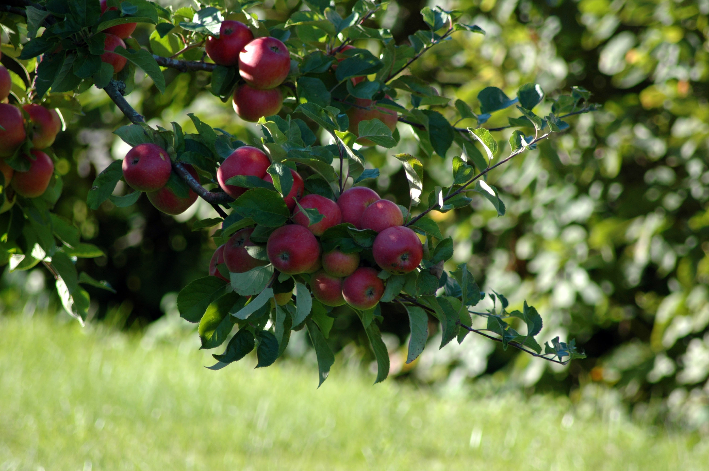

טיפ
- תוהים כיצד אפשר ליצור ערך חדש? דף זה יסביר לכם כיצד לעשות זאת.
תפוח
ערך זה עוסק בעץ ובפרי התפוח. אם התכוונתם למשמעות אחרת, ראו תפוח (פירושונים) .
תַּפּוּחַ תַּרְבּוּתִי (מכונה גם תפוח-עץ או בקיצור תפוח, שם מדעי : Malus domestica) הוא מין של עץ פרי נשיר במשפחת הוורדיים.
כלים
דפים המקושרים לכאן שינויים בדפים המקושרים דפים מיוחדים קישור קבוע מידע על הדף ציטוט הדף הזה פריט ויקינתונים עריכת קישורים בין־לשונייםמקור התפוח התרבותי [עריכת קוד מקור|עריכה]
מקורו של התפוח התרבותי במין הבר Malus sieversii, המגיע ממרכז אסיה וגדל גם כיום בהרים בדרום קזחסטן , בקירגיזסטן , בטג'יקיסטן ובמחוז שינג'יאנג בסין . מינים אחרים שככל הנראה קשורים בהתפתחות התפוח התרבותי הם Malus baccata ו-Malus sylvestris. מיני תפוח נוספים משמשים כיום בניסיונות לפתח זני תפוחים שיהיו מסוגלים לגדול בתנאי אקלים שונים.
זני תפוחים מתורבתים [עריכת קוד מקור|עריכה]
 המונח "דלישס" מפנה לכאן. לערך העוסק באתר אינטרנט, ראו
דלישס (אתר אינטרנט)
המונח "דלישס" מפנה לכאן. לערך העוסק באתר אינטרנט, ראו
דלישס (אתר אינטרנט)
כיום קיימים בעולם יותר מ-7,500 זנים של תפוחים מתורבתים השונים זה מזה ב צבע , בטעם , במרקם, בצורה, באקלים אליו הם מותאמים, בעמידותם ל מחלות , בקלות המשלוח ובאורך חיי המדף . ככלל התפוחים כיום מתוקים יותר מהזנים הקדומים. ב צפון אמריקה נפוצים תפוחים מתוקים-חמצמצים, בעוד שבאסיה התפוחים המועדפים הם מתוקים במיוחד.
עם הזנים הנפוצים נמנים: